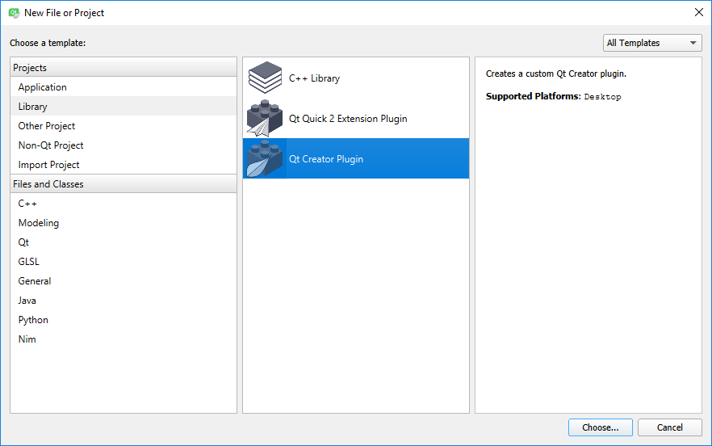
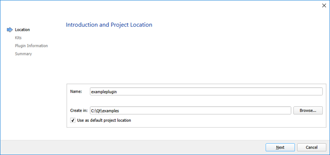
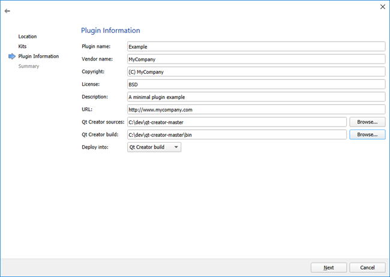
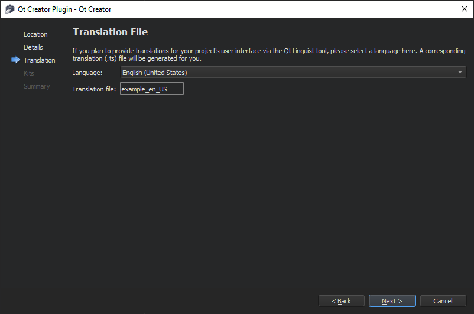
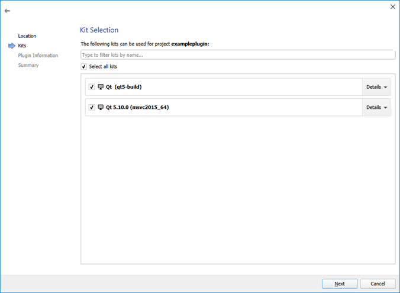
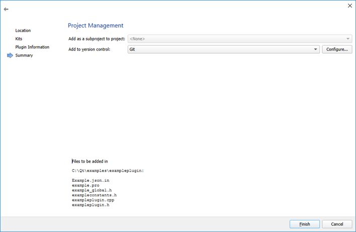
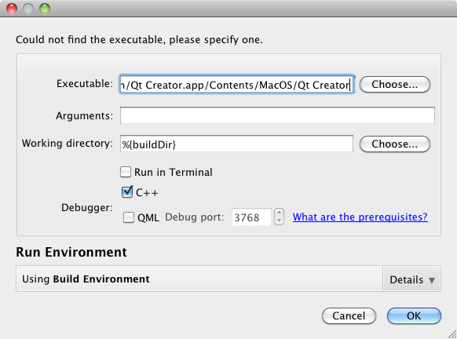

Creating Your First Plugin
This section describes how to create a Qt Creator plugin by using the plugin template provided by Qt Creator, and get the first impression of what a plugin consists of and what its general structure is.
Creating a Plugin Project
Qt Creator comes with a wizard for Qt Creator plugins, that creates a runable, minimal plugin for you. We strongly suggest that you use two different Qt Creator instances for developing and testing your plugin with. Otherwise your plugin will also be loaded in your development environment, which can make that unstable while your plugin is still unstable. You can just create a copy of your Qt Creator build and use one for actually developing, and the other for testing your plugin with.
You need to make sure that you use the same Qt Creator version that you want to develop for to create the plugin. Because of the Binary and Source Compatibility rules of Qt Creator, the Qt Creator plugin wizard creates a plugin that might only compile and run with the same Qt Creator version that it was created with.
- Select File > New Project > Library > Qt Creator Plugin > Choose.

The Introduction and Project Location dialog opens.

- Give your project a name and specify in which path this project will be created. The actual plugin's name can be different from the project name. You will choose that name later in the wizard.
- Continue to the Plugin Information dialog.

- In the Plugin name field, type Example. The name of the plugin is used as its identifier, and also is the base for the file names and classes in the code.
- The values of the following fields are mainly informational, and are shown in the detailed view in Qt Creator's plugin overview (Help > About Plugins, or Qt Creator > About Plugins on macOS).
- Vendor name is a short one-word name of the company or organization that created the plugin. This is also used for the path name where the plugin will be deployed to.
- Copyright is a one-line, short copyright string.
- License is a license text.
- Description is a short description of what the plugin does.
- URL is a website where the user can find more information about the plugin and/or organization providing it.
- Set the Qt Creator build field to the build directory of the Qt Creator instance you want to use to test your plugin with. If you don't do that correctly, you will get compile errors for your plugin, and your plugin might not show up in Qt Creator at all.
- Continue to the Translation File dialog.

- Select a language to localize your plugin to. This sets up translation support for the selected language.
- Continue to the Kit Selection dialog.

- Select the kit to build and run your project with. For a Qt Creator plugin, this needs to be a kit with Desktop device type, and a Qt version that is compatible with the Qt version that your Qt Creator was built with (in the best case the exact same build). If you use an incompatible Qt version to build your plugin, you will get errors while Qt Creator tries to load your plugin.
- Continue to the Project Management dialog.

- Review the files that will be created, choose a version control system that Qt Creator should use for your project (always a good idea!), and finish the wizard.
Building and Running the Plugin
If you passed the correct Qt Creator build path in the project wizard, your plugin should just build fine when pressing the build button. Before running the project, select Build & Run > Run to specify run settings:

Select the path to the Qt Creator executable from the build that you specified in the Qt Creator build field in the project wizard and set the value of the Command line arguments field to -pluginpath %{buildDir}.
When you click OK, Qt Creator starts up, and you can verify that your plugin is successfully loaded by looking for a menu entry Tools > Example and by looking for the plugin in the Help > About Plugins dialog.
File Structure
The plugin wizard creates a set of basic files that a plugin needs or should have. We will have a look at some of them in detail in the following sections, here is a short overview:
| File | Role |
|---|---|
README.md | Describes how to build and run the plugin. |
Example.json.in | Plugin meta data template. CMake creates an Example.json from this file, which is compiled into the plugin as meta data. The meta data is read by Qt Creator to find out about the plugin. |
CMakeLists.txt | Project file, used by CMake to generate build files and build the plugin. |
example_global.h | Contains macro definitions that are useful when this plugin should export symbols to other plugins. |
exampleconstants.h | Header defining constants used by the plugin code. |
example.h, example.cpp | C++ header and source files that define the plugin class that will be instantiated and run by Qt Creator's plugin manager. |
build_cmake.yml | Adds a GitHub action and workflow that builds your plugin anytime you push commits to GitHub on Windows, Linux, and macOS. For more information, see .github\workflow\README.md. |
CMake Project
The CMake project file CMakeLists.txt defines how your plugin should be compiled. Qt Creator plugins need to have a specific setup there, in addition to telling CMake which files need to be compiled (or handled by moc or uic). Let us have a look at what the project wizard generated for you in detail.
# Remove when sharing with others. list(APPEND CMAKE_PREFIX_PATH "/Users/example/qt-creator/build")
The list(APPEND ...) call tells CMake to include the Qt Creator build path that you specified in the wizard in its search path for dependencies. Since this contains an absolute path on your local machine, you should remove this line when sharing the project with others.
Without this line, you need to explicitly add the path to the Qt Creator build to CMAKE_PREFIX_PATH when configuring your plugin with CMake.
project(Example) set(CMAKE_AUTOMOC ON) set(CMAKE_AUTORCC ON) set(CMAKE_AUTOUIC ON) set(CMAKE_CXX_STANDARD 17)
This section does some standard setup for Qt/CMake projects. Besides setting a project name and a C++ standard to use, it turns on automatic detection of files that need to be run through moc, rcc or uic.
find_package(QtCreator COMPONENTS Core REQUIRED)
find_package(QT NAMES Qt6 Qt5 COMPONENTS Widgets REQUIRED)
set(QtX Qt${QT_VERSION_MAJOR})
This section tells CMake to locate Qt Creator and Qt. If your plugin requires additional Qt modules, you need to add them to the corresponding find_package call in this section.
To find Qt Creator and Qt, the paths to the Qt Creator and Qt installation must be present in the CMAKE_PREFIX_PATH when you configure your plugin with CMake.
add_qtc_plugin(Example
PLUGIN_DEPENDS
QtCreator::Core
DEPENDS
${QtX}::Widgets
QtCreator::ExtensionSystem
QtCreator::Utils
SOURCES
.github/workflows/build_cmake.yml
.github/workflows/README.md
README.md
example.cpp
example.h
example_global.h
exampleconstants.h
examplefunctions.h
)
The add_qtc_plugin call creates a target for your plugin with the specified name.
In the PLUGIN_DEPENDS sub-section, you need to specify Qt Creator plugins that your plugin depends on. Valid values are a plugin's name prefixed with QtCreator::.
In the DEPENDS sub-section, you need to specify libraries that your plugin depends on. Use a Qt module name prefixed with $\{QtX\}:: to link to additional Qt modules. To link against additional Qt Creator libraries, prefix their name with QtCreator::. In this subsection you also specify other libraries that your plugin depends on.
In the SOURCES sub-section, you specify all files that belong to your plugin project. CMake sorts these into source files and header files automatically. Other files in this section are ignored by CMake but appear for example in the project tree that is shown in IDEs like Qt Creator for easier access.
Plugin Meta Data Template
The .json file is a JSON file that contains information that is needed by the plugin manager to find your plugin and resolve its dependencies before actually loading your plugin's library file. We will only have a short look at it here. For more information, see Plugin Meta Data.
The wizard doesn't actually create a .json file directly, but instead a .json.in file. qmake uses this to generate the actual plugin .json meta data file, replacing variables like QTCREATOR_VERSION with their actual values. Therefore you need to escape all backslashes and quotes in the .json.in file (i.e. you need to write \ to get a backslash and \" to get a quote in the generated plugin JSON meta data).
"Name" : "Example",
"Version" : "0.0.1",
"CompatVersion" : "0.0.1",
The first items in the meta data that is created by the wizard define the name of your plugin, its version, and with what version of this plugin the current version is binary compatible with.
"Vendor" : "MyCompany",
"Copyright" : "(C) MyCompany",
"License" : "Put short license information here",
"Description" : "Put a short description of your plugin here",
"Url" : "https://www.mycompany.com",
After that you'll find the information about the plugin that you gave in the project wizard.
${IDE_PLUGIN_DEPENDENCIES}
The IDE_PLUGIN_DEPENDENCIES variable is automatically replaced by the dependency information in QTC_PLUGIN_DEPENDS and QTC_PLUGIN_RECOMMENDS from your plugin's .pro file.
Plugin Class
The files example.h and example.cpp define the plugin implementation of your little plugin. We'll concentrate on some highlights here, and give pointers to more detailed information for the various parts.
Header File
The header file example.h defines the interface of the plugin class.
namespace Example { namespace Internal {
The plugin is defined in a Example::Internal namespace, which conforms to the coding rules for namespacing in Qt Creator sources.
class ExamplePlugin : public ExtensionSystem::IPlugin { Q_OBJECT Q_PLUGIN_METADATA(IID "org.qt-project.Qt.QtCreatorPlugin" FILE "Example.json")
All Qt Creator plugins must be derived from ExtensionSystem::IPlugin and are QObjects. The Q_PLUGIN_METADATA macro is necessary to create a valid Qt plugin. The IID given in the macro must be org.qt-project.Qt.QtCreatorPlugin, to identify it as a Qt Creator plugin, and FILE must point to the plugin's meta data file as described in Plugin Meta Data.
bool initialize(const QStringList &arguments, QString *errorString);
void extensionsInitialized();
ShutdownFlag aboutToShutdown();
The base class defines basic functions that are called during the life cycle of a plugin, which are here implemented for your new plugin. These functions and their roles are described in detail in Plugin Life Cycle.
private: void triggerAction();
The plugin has an additional custom slot, that is used to pop up a dialog when the user chooses the menu item that this plugin adds.
Source File
The source file contains the actual implementation of the plugin, which registers a new menu and menu item, and opens a message box when that item is triggered.
All the necessary header files from the plugin code itself, from the Core plugin, and from Qt are included in the beginning of the file. The setup of the menu and menu item is done in the plugin's initialize function, which is the first thing called after the plugin constructor. In that function, the plugin can be sure that the basic setup of plugin's that it depends on has been done, for example the Core plugin's ActionManager instance has been created.
For more information about implementing the plugin interface, see the ExtensionSystem::IPlugin API documentation and Plugin Life Cycle.
auto action = new QAction(tr("Example Action"), this);
Core::Command *cmd = Core::ActionManager::registerAction(action, Constants::ACTION_ID,
Core::Context(Core::Constants::C_GLOBAL));
cmd->setDefaultKeySequence(QKeySequence(tr("Ctrl+Alt+Meta+A")));
connect(action, &QAction::triggered, this, &ExamplePlugin::triggerAction);
This part of the code creates a new QAction, registers it as a new Command in the action manager, and connects it to the plugin's slot. The action manager provides a central place where the user can assign and change keyboard shortcuts, and manages cases where for example a menu item should be directed to different plugins under different circumstances, as well as a few other things.
Core::ActionContainer *menu = Core::ActionManager::createMenu(Constants::MENU_ID);
menu->menu()->setTitle(tr("Example"));
menu->addAction(cmd);
Core::ActionManager::actionContainer(Core::Constants::M_TOOLS)->addMenu(menu);
Here a new menu item is created, the created command added to it, and the menu added to the Tools menu in the menu bar.
void ExamplePlugin::triggerAction() { QMessageBox::information(Core::ICore::mainWindow(), tr("Action Triggered"), tr("This is an action from Example.")); }
This part defines the code that is called when the menu item is triggered. It uses the Qt API to open a message box that displays informative text and an OK button.